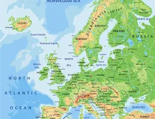
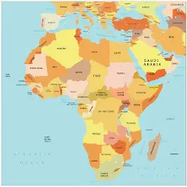
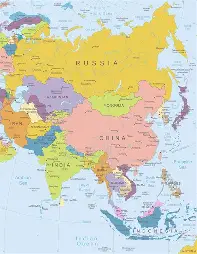
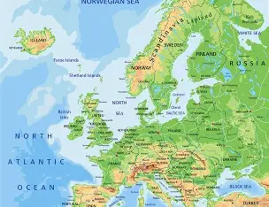
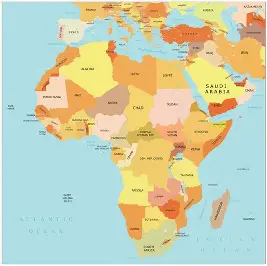
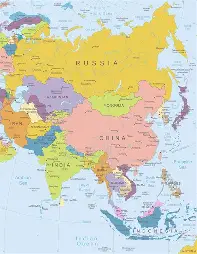

Welcome to the site where you can find the rates, causes and effects of obesity all across the globe. This Page consists of all the continents in the world that have been affected by obesity in any way, which means that Antarctica will not be part of the list as there are no human inhabitants other than research facility people whos diets are from different parts of the world!
CATALOGUE
North America South America
South America
 Europe

Africa

Asia

Oceania
Europe

Africa

Asia

Oceania